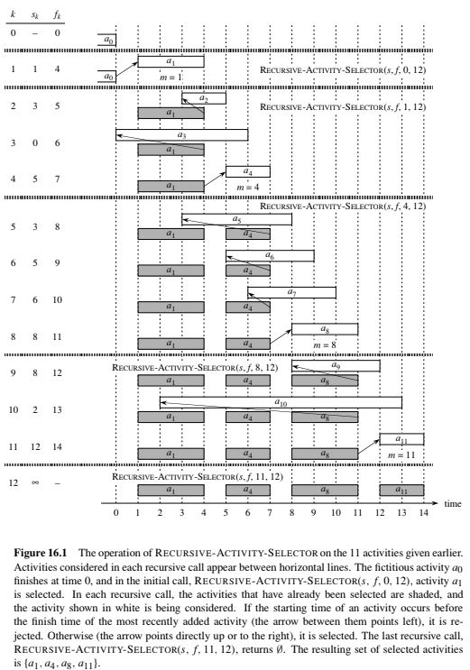
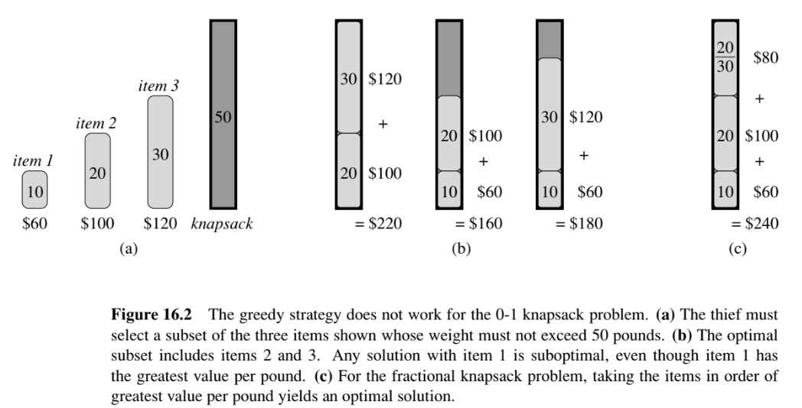
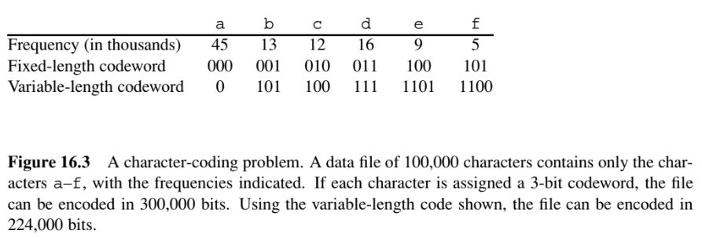
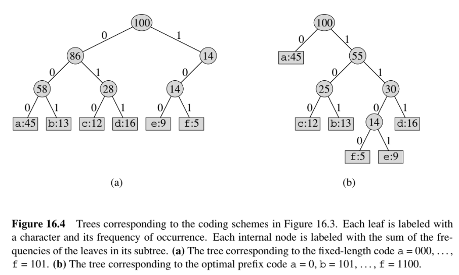
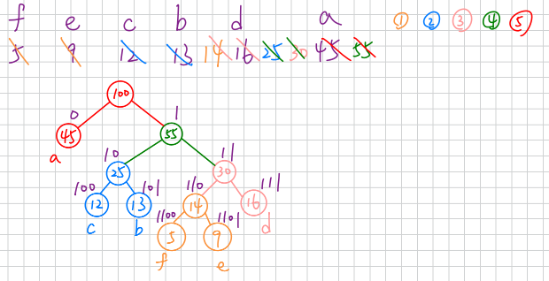
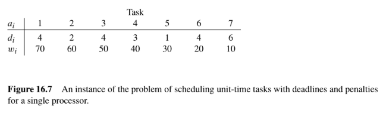
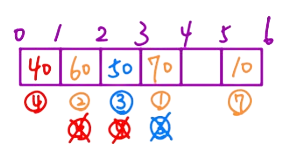

第一節 活動選擇問題
為方便遞迴，定義虛擬活動 $a_0$（$f_0 = 0$）與 $a_{n+1}$（$s_{n+1} = \infty$），以及子問題：
$$S_{ij} = \{a_k : f_i \le s_k < f_k \le s_j\}$$
即在活動 $a_i$ 結束後、$a_j$ 開始前，所有可以安排的活動集合
動態規劃解法
這題可以用動態規劃的方法來做：
設 $c[i,j]$ 為 $S_{ij}$ 中最大相容子集的活動數量，遞迴式為：
$$c[i,j] = \begin{cases} 0 & \text{若 } S_{ij} = \varnothing \\ \max_{i < k < j}\{c[i,k] + c[k,j] + 1\} & \text{若 } S_{ij} \ne \varnothing \end{cases}$$
這個意思就是當 $a_i$ 到 $a_j$ 之間有可排的活動，就嘗試挑出 $a_k$ 來排，則問題就拆分成 $a_i$ 到 $a_k$ 與 $a_k$ 到 $a_j$ 兩部分，遍歷所有 $k$ 後就一定會得到最佳解
可是這個解法的問題是 $i$ 與 $j$ 的雙層巢狀迴圈已經需要 $O(n^2)$ 的時間，裡面又需要 $O(n)$ 的時間遍歷 $k$，整體會需要 $O(n^3)$ 的時間
貪心演算法解法
任意非空子問題 $S_{ij}$，令 $a_m$ 為 $S_{ij}$ 中結束時間最早的活動：
$$f_m = \min\{f_k : a_k \in S_{ij}\}$$
則我們可以觀察到：
- $a_m$ 必然屬於某個 $S_{ij}$ 的最大相容子集
- 選擇 $a_m$ 後，子問題 $S_{im}$ 為空，剩下只需處理 $S_{mj}$
以直觀的方法來看：先結束的活動可以讓後面有更多的時間去排另外的活動，因此先排結束時間早的活動不會讓解變差
Pseudocode (Recursive)
1 | RECURSIVE-ACTIVITY-SELECTOR(s, f, i, j) |
說明 (Recursive)

（圖片來源：Introduction to Algorithms, 2nd ed., Figure 16.1）
從這張圖可以看出，每層遞迴都從上一個已選活動結束時間之後開始找，找到開始時間 < 上一個已選活動結束時間的放進去。最終結果為 $\{a_1, a_4, a_8, a_{11}\}$
（這個 Pseudocode 沒有仔細講，但 s 陣列已經在開始 RECURSIVE-ACTIVITY-SELECTOR 前依照結束時間早的活動排好序）
Pseudocode (Iterative)
1 | GREEDY-ACTIVITY-SELECTOR(s, f) |
說明 (Iterative)
上述遞迴版本也可以轉成迭代的方法。
$i$ 代表最近安排的活動，當 $s[m] \ge f[i]$ 就代表第 $m$ 個活動是第 $i$ 個活動結束後，第一個開始時間晚於第 $i$ 個活動，且結束時間最早的活動
第二節 背包問題
0-1 背包 vs 連續背包

（圖片來源：Introduction to Algorithms, 2nd ed., Figure 16.2）
這一節用背包問題來說明貪心演算法的界線。物品有重量與價值，背包容量固定，規則不同：
- 0-1 背包：每件物品只能選拿或不拿
- 連續背包：可以以任意比例切割物品
圖中範例：3 件物品，容量 50 磅
| 物品 | 重量 | 價值 | 單位價值 (CP值) |
|---|---|---|---|
| item 1 | 10 | $60 | 6 |
| item 2 | 20 | $100 | 5 |
| item 3 | 30 | $120 | 4 |
- 0-1 背包：如果使用貪心演算法，我們會優先由 CP 值高的 item 1 先選，再到 item 2。如果這麼選的話就會如上圖 16.2 (b) 的中間一樣，最終只剩 20 磅，放不下 item 3，導致最終只能拿到 60 + 100 = 160 塊，但其實最佳選擇是選 item 2 以及 item 3，是 100 + 120 = 220 塊。
- 連續背包：如果使用貪心演算法，我們會優先由 CP 值高的 item 1 先選，再到 item 2，最後 item 3 會切割出 20 磅 = 120 * (2/3) = 80 塊，最終是 60 + 100 + 80 = 240 塊。
由上述可知：
- 0-1 背包：適用貪心演算法
- 連續背包：不適用貪心演算法
第三節 Huffman 編碼

（圖片來源：Introduction to Algorithms, 2nd ed., Figure 16.3）
以 6 個字元為例（頻率單位：千次）：
| 字元 | a | b | c | d | e | f |
|---|---|---|---|---|---|---|
| 頻率 | 45 | 13 | 12 | 16 | 9 | 5 |
| 固定長度編碼 | 000 | 001 | 010 | 011 | 100 | 101 |
| Huffman 編碼 | 0 | 101 | 100 | 111 | 1101 | 1100 |
用固定 3 位元編碼需要 $300,000$ bits；Huffman 編碼只需 $224,000$ bits，節省約 25%
因為要用一套編碼方式讓整體長度最小，因此出現頻率高的勢必要更短，這樣整個文字編碼後的長度最小
這裡面有個細節要注意，我們編碼後的文字之間不會有間隔，因此所有編碼後的值都不能是是另一個編碼後的值的前綴。例如 A 編為 00，B 就不能編為 0，因為 B 的 0 是 A 的前綴，如果我們堅持要這樣編，假設原本的文字是 AA，編碼後是 0000，解碼的時候因為我們一開始看到 0 就覺得是 B，會直接解碼成 BBBB。
Pseudocode
1 | HUFFMAN(C) |
說明

（圖片來源：Introduction to Algorithms, 2nd ed., Figure 16.4）
圖 (a) 為固定長度編碼的樹（葉節點深度相同），圖 (b) 為 Huffman 編碼的樹
我們先定義這棵樹的結構：
- 葉節點：對應要編碼的字元
- 內部節點：標記子樹頻率總和
- 邊：左邊標 0、右邊節點標 1，從根到葉的路徑即為該字元的碼
接下來我們思考如何讓這棵樹長出來。我們要讓頻率高的編碼靠根節點，這樣深度較小，走過的邊數少自然編碼就比較短；頻率低的編碼遠離根節點，這樣深度較深，走過的邊數多自然編碼就比較長，但是可以把深度淺的位置讓給頻率高的字元
因此這邊的想法就是每次都把頻率最小的兩棵子樹合為一棵新樹，然後新樹的根節點是等於兩子樹的頻率加總，重複直到只剩一棵樹
最後依據上面的定義，利用邊去把每個葉節點都編碼完成
以上圖為例，一開始依頻率排序為 f:5, e:9, c:12, b:13, d:16, a:45
| 步驟 | 操作 | 合併結果 | 剩餘節點 |
|---|---|---|---|
| (a) | 初始 | — | f:5, e:9, c:12, b:13, d:16, a:45 |
| (b) | 合併 f+e | 新節點 14 | c:12, b:13, d:16, [f,e]:14, a:45 |
| (c) | 合併 c+b | 新節點 25 | d:16, [f,e]:14, [c,b]:25, a:45 |
| (d) | 合併 [f,e]+d | 新節點 30 | [c,b]:25, [f,e,d]:30, a:45 |
| (e) | 合併 [c,b]+[f,e,d] | 新節點 55 | a:45, [c,b,f,e,d]:55 |
| (f) | 合併 a+55 | 根節點 100 | 完成 |
<補充> 以下筆記即為此樹的建構過程，從 f:5, e:9, c:12, b:13, d:14, d:16, a:45, 55 一步步合併，每次圈出頻率最小的兩個節點

第四節 帶截止期的任務排程

（圖片來源：Introduction to Algorithms, 2nd ed., Figure 16.7）
說明
以上圖為例：
| 任務 $a_i$ | 1 | 2 | 3 | 4 | 5 | 6 | 7 |
|---|---|---|---|---|---|---|---|
| 截止期 $d_i$ | 4 | 2 | 4 | 3 | 1 | 4 | 6 |
| 懲罰 $w_i$ | 70 | 60 | 50 | 40 | 30 | 20 | 10 |
我們要最小化懲罰，就意味著我們必須讓懲罰高的先做完，因此一開始需要先對任務最排序，懲罰最大的先排
排序後，我們只需要對每一個任務都先排到截止期前才做，如果已經被占走了，就繼續往前放，如果都沒辦法放，就只能捨棄，並接受懲罰
以上圖為例：準時執行 $\{a_1, a_2, a_3, a_4, a_7\}$，誤期捨棄 $\{a_5, a_6\}$，誤期懲罰 = $30 + 20 = 50$
<補充> 以下筆記即為此排程最小化懲罰的步驟過程

總結
| 演算法 | 問題 | 時間複雜度 | 貪心策略 | 貪心策略保證最優 |
|---|---|---|---|---|
| Greedy-Activity-Selector | 活動選擇 | $\Theta(n)$ | 每次選最早結束的活動 | 是 |
| 0-1 Knapsack | 0-1 背包 | $O(nW)$ (動態規劃) | — | 否 |
| Fractional Knapsack | 連續背包 | $O(n \lg n)$ | 按單位價值由高到低選 | 是 |
| Huffman | 編碼後整體長度最小 | $O(n \lg n)$ | 每次合併頻率最小的兩棵子樹 | 是 |
| Task Scheduling | 帶截止期任務排程 | $O(n \lg n)$ | 依懲罰排序，能排進去就排 | 是 |
貪心演算法 vs. 動態規劃的判斷準則：
- 具備局部最優推全局最優的特性且具有最優子結構 => 用貪心法則
- 只具備最優子結構但沒有貪婪選擇性質（如 0-1 背包）=> 用動態規劃
參考文獻
T. H. Cormen, C. E. Leiserson, R. L. Rivest, and C. Stein, Introduction to Algorithms, Second Ed., The MIT Press, 2001.